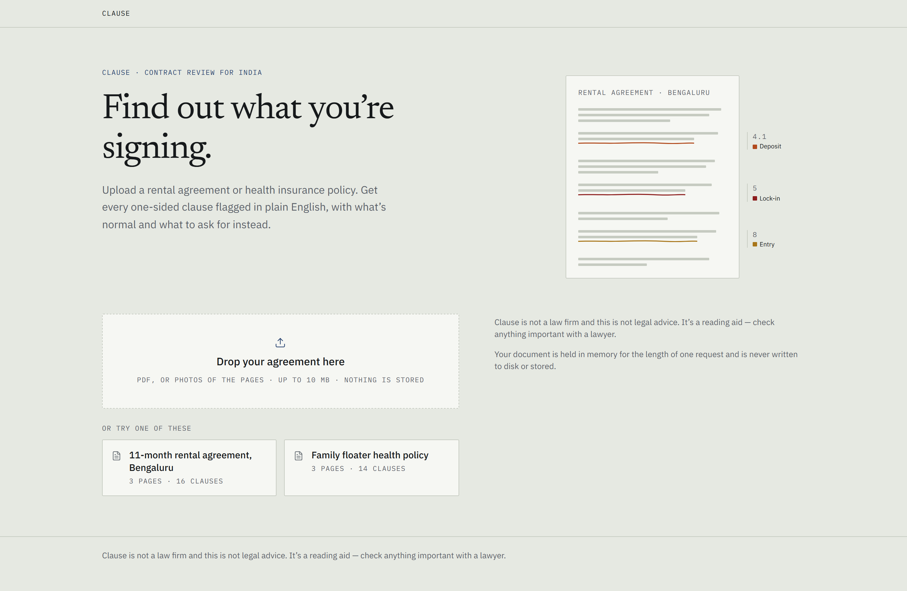
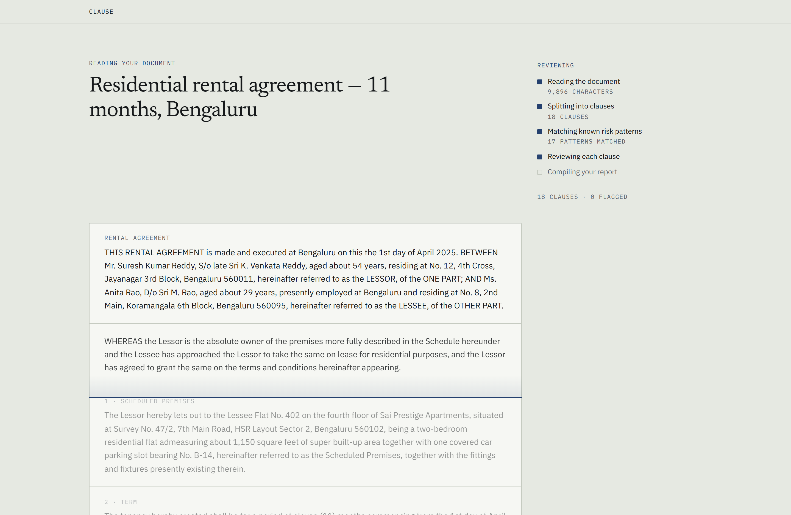
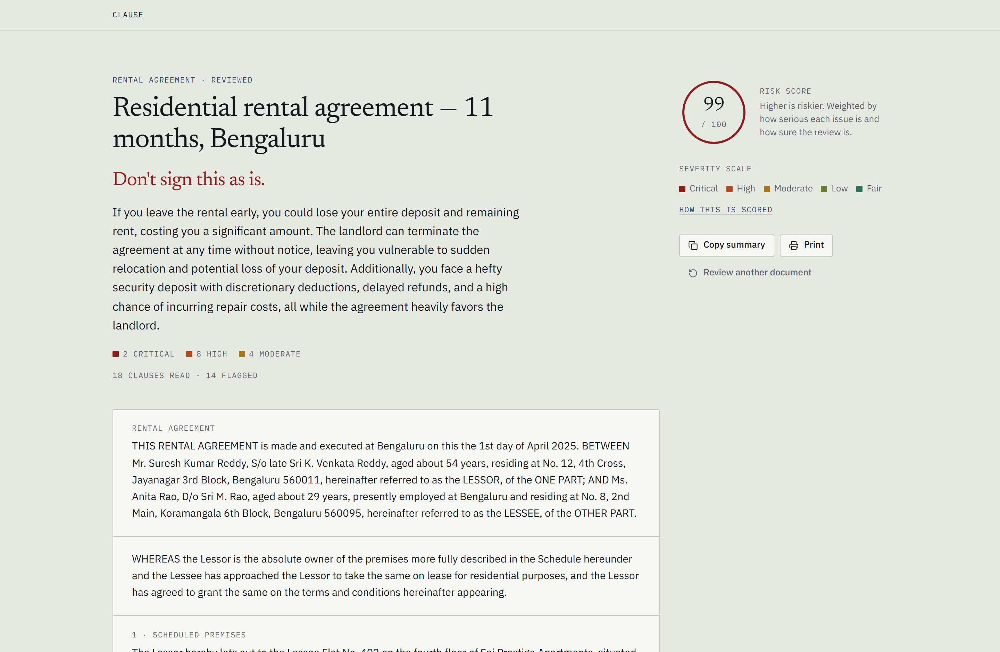
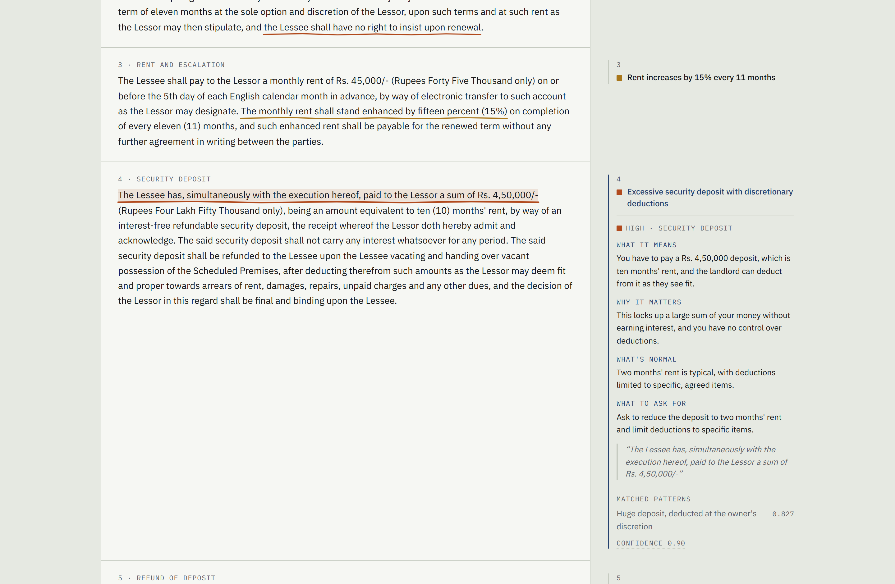
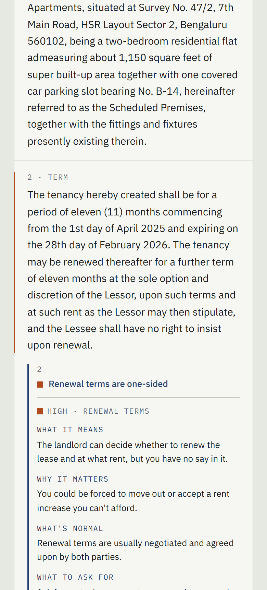
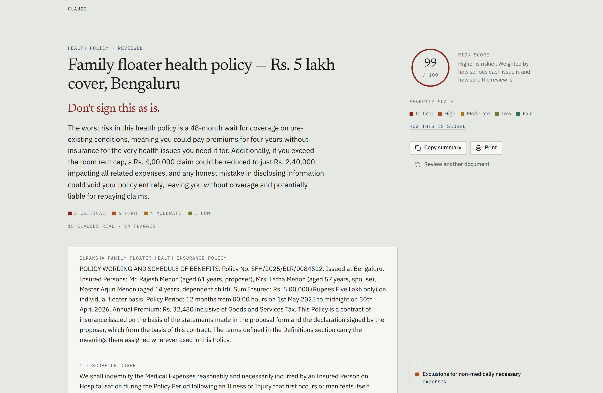
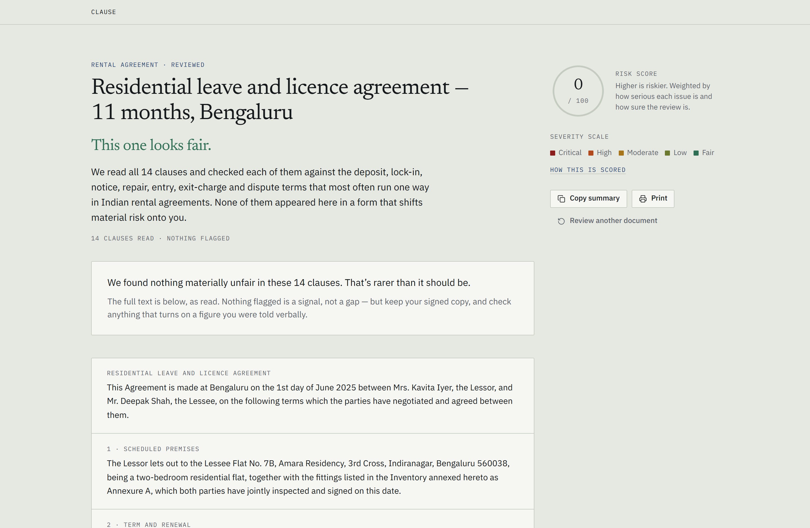

A consumer in India uploads a rental agreement or a health insurance policy and gets back a marked-up copy of their own document: every one-sided clause flagged in the margin, explained in plain English, benchmarked against what is normal, with a concrete suggestion for what to ask for instead.
Built for the person who is about to sign something they don’t fully understand — a tenant, a policyholder — not for a lawyer. The job is to make them feel informed and equipped in under a minute.

Everything happens in a single request and streams back as it is produced, so the reader watches their own agreement being marked up rather than staring at a spinner. On the bundled sample the finished report arrives in under fifteen seconds, with the clause text on screen and the first flags landing several seconds before that.
The clause restated in their terms, with the figures from their own document.
The concrete consequence — in rupees, in months, or in the right they give up.
The market or regulatory benchmark in India, so they can tell unusual from routine.
A specific, sayable request — phrased as something they could put in a message.
A quote is never invented. Every quoted span is verified character-for-character against the clause it came from. If it cannot be located in the document, no quote is shown.
A fair clause gets no flag. An unflagged clause is a signal, not a gap — and when nothing is flagged, the report says so in words.
Laid out down to 380px wide with no sideways scrolling — the margin collapses and each finding moves under its clause.
The whole flow, from choosing a document to opening a finding, works without a mouse and with a visible focus ring throughout.
If the reader's device asks for reduced motion, the sweep and the fly-in are dropped and the final state is shown at once.
Printing gives a single-column copy with every finding expanded under its clause, so it can be read and marked up away from a screen.



Five levels, one colour language across the margin, the counts and the score. Colour is spent on the annotations and nowhere else.
| Critical | A large sum, the home, or the cover itself |
| High | Seriously one-sided, real money or rights |
| Moderate | A genuine but bounded cost |
| Low | Minor; useful to know before signing |
| Fair | Context, not a risk |
The report is meant to be used in a conversation with a landlord, a broker or an insurer — so it leaves the page in two ways.
The disclaimer travels with both, because they get read away from the app.



34 risk patterns, written for Indian consumer reality rather than translated from elsewhere — rupee amounts, Indian regulatory vocabulary, and the things that actually go wrong. Each carries what the unfair version looks like, why it hurts, and what counts as normal here.
Deposit size and deduction discretion, refund timing, lock-in with forfeiture, notice asymmetry, escalation, repairs pushed to the tenant, entry without notice, personal restrictions, exit painting charges, brokerage and stamp duty, subletting, termination for convenience, late-rent penalties, dispute venue and arbitration cost, utilities and society charges, “as is” condition, unilateral amendment.
Pre-existing and specific waiting periods, room-rent and ICU caps, proportionate deduction, age-linked co-payment, disease sub-limits, non-medical exclusions, claim intimation deadlines, network and cashless limits, pre- and post-hospitalisation windows, free-look period, non-disclosure repudiation and moratorium, no-claim bonus reset, renewal and premium revision, day-care and domiciliary cover, restoration limits, breadth of exclusions.
Every figure below was produced by running documents through the deployed pipeline. They describe the current build on the documents named — not a claim about all agreements.
| Document | Clauses | Flagged | Critical | Verdict |
|---|---|---|---|---|
| Rental agreement, Bengaluru (sample) | 18 | 14 | 2 | Don’t sign as is |
| Family floater health policy (sample) | 15 | 14 | 3 | Don’t sign as is |
| Photographed page, via OCR | 7 | 5 | 1 | Don’t sign as is |
| Balanced agreement (fair control) | 14 | 0 | 0 | This one looks fair |
Clause is not a law firm and this is not legal advice. It is a reading aid. Findings describe risks and market norms, never rulings, and the disclaimer appears on every screen including the printed report. Anything important should be checked with a lawyer.
A note on the live link: it is currently serving the two bundled example documents rather than calling the model, which the interface marks with a Demo data chip in the corner. That path exists so the product can be demonstrated reliably and at no cost; the screenshots in this document are genuine model output, captured with analysis switched on. Adding an API key turns live analysis on and the chip off.